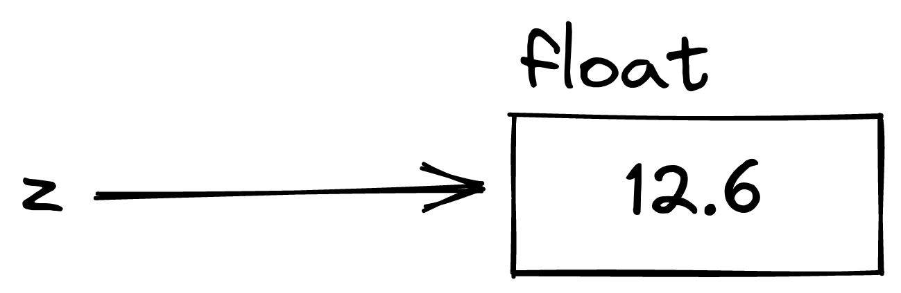

3Python Notes
CSCI 4511 Spring 2025
These notes are meant to accompany a lecture in the course. If you are looking for a full Python reference, I recommend the full Python reference.
Python From Java
Whitespace Syntax
Python formally uses whitespace as part of its syntax. Examples:
You may be used to languages ending logical lines with a semicolon: ;. Python ends logical lines with a carriage return (a new line).
Compare Java:
with Python:
Extending Logical Lines in Python
Where languages like Java use curly braces { and } to group statements, Python typically uses indentation.
Compare Java:
with Python:
The above also demonstrates:
- Comments are indicated with
# forloop syntax is concise- Declaration of
iand incrementingi += 1are implied - Python does not have
++, use+=1
- Declaration of
- Things that are associated with groups of statements end in a colon
:
Nesting loops and/or conditionals uses multiple levels of indentation:
The Interpreter
You can run the Python interpreter from the command line and experiment with code. Open a terminal and simply run python.
Operators
Basic math operators work similarly in Python and Java:
Dividing two integers (or any two numbers) with / automatically yields a float. Quotient/remainder is available with the quotient // and remainder % operators:
These are not constrained to integers:
Operators like + and * work like math operators when the things on both sides of them are numbers. They do other things when they’re around strings.
+ concatenates:
* extends the string, when used with an integer:
The above ‘multiplication’ operation would be nonsensical with a float instead of an int, or with two strings, and trying it will give you an error.
Powers can be raised with **:
There is also a well-documented math library for things like square roots.
Note: There is nothing wrong with the math library, but most people use numpy for math these days.
Conditionals
Conditionals are expressed with if, elif, and else:
- The
ifis required.
- Any whole number of
elifs are allowed.
- Zero or one
elses are allowed, and theelsealways comes last.
Syntax uses colons and indentation, just like loops.
x = 5
if x > 10:
print("x is huge")
elif x < 0:
print("x is negative")
elif x > 0:
print("x can be counted on fingers")
else:
print("x is zero")x can be counted on fingers(This is a very silly example.)
There is an extremely powerful match case conditional syntax which you can use.1 Read about it here
1 If you are extremely powerful.
Types and Variables
Python has types, but variables do not have types at compile time. Compared to Java, this might seem confusing. You can think of variables as pointing to objects that have types (Python also does not, explicitly, have pointers):


Variables can be reassigned without regard to the type the variable is pointing at:
Assigning a variable to another variable assigns it to wherever the other variable is pointing:
Reassigning the other variable doesn’t change the first variable:
Lists
Lists are delimited with square brackets [ and ].
They are not typed and can contain whatever you want. Or, for the imaginative, they can contain any type of object.
Individual list elements can be accessed via “slicing.” Note that lists are 0-indexed.
Individual elements of a list can be modified:
Lists are collections of references to variables and behave differently with respect to assignment. Specifically, assigning a variable to another variable that references a list will cause both variables to reference the same list object:
Changing x also changes y, since they reference the same thing:
Slicing can access more than one element:
Strings can also be sliced:
More details about slicing in the docs.
Lists can be concatenated with +, which returns a new list:
Lists have no fixed length, they can be lengthened in place with append()
Tuples
Tuples are similar to lists, but they are immutable. They are optionally delimited with parentheses ( and )
While the parentheses are optional, they are typically used.
Tuples can also be used for multiple assignment:
Dicts
Hash tables in Python are called dictionaries, or “dicts.” They consist of key-value pairs. They are delimited with curly braces { and }.
This dict has one pair: the key is 'sunrise' (a string) and the value is 126 (an int).
- Keys and values can be any variable type. Values can be lists or dicts, but keys cannot (since these cannot be hashed.)
Dict values can be accessed via their keys:
Dict values can also be changed or added via their keys:
Looping
Python has several ways to loop through things.
Via index:
Via content:
enumerate üòå
cat 0 - dog 1 - owl 2 - Looping directly through a dict iterates over keys:2
2 Note the f-string
carl:5 - otis:6 - alan:2 - You can also iterate over the values:
Or the items:
carl 5 - otis 6 - alan 2 - There are while loops:
Booleans
Python uses and, or and not for boolean logic. Equality operators are the same as Java (==, <, !=, etc.). Parentheses aren’t enforced, but it’s a fine idea to use them anyway.
Bools can take on either True and False.
Boolean operators short-circuit, which means:
- If the left side of an
andisFalse, the right side isn’t evaluated. - If the left side of an
orisTrue, the right side isn’t evaluated.
nonsense above isn’t defined but the reference is never reached, so the program runs without error. Short-circuiting is occasionally useful and occasionally gets you into trouble.
Truth
Python has “truth values” for most built-in types. 0, empty values, and None (null) evaluate as false, non-zero and non-empty values evaluate as true, even though they aren’t equal to the boolean.
Functions
Functions are defined with def and a colon. Indentation to group statements follows the same conventions you have already seen.
Functions do not have to return anything.
Variables passed to a function are copied into the function and not modified outside of the scope of the function.
Lists passed to a function are passed as references, and are modified outside of the scope of the function.
['sunset', 'sunrise']This is a decent time to note that you can get into some trouble with functions because nothing in Python is explicitly typed:

OOPython
Modules and Imports
Virtual Environments
You probably know this:
and this3
3 It might not run if you don’t have scipy installed, so install scipy.
import numpy as np
import pandas as pd
from scipy import stats
a = stats.uniform(1, 5)
print(a)
print(a.cdf(2), a.cdf(3), a.cdf(5))<scipy.stats._distn_infrastructure.rv_continuous_frozen object at 0x11f0d2e40>
0.2 0.4 0.8Where do imports come from? The environment. There’s a default environment; but for any complicated project, you’ll want to create your own. You can call it whatever you want. .venv works. You could call it otis. You should call it something meaningful.
At the command line:4
4 Your install might use python3 instead of python
python -m venv otis
cd otis; tree | head -n 172.
├── bin
│ ├── activate
│ ├── activate.csh
│ ├── activate.fish
│ ├── Activate.ps1
│ ├── pip
│ ├── pip3
│ ├── pip3.11
│ ├── python -> /home/adsr/miniconda3/bin/python
│ ├── python3 -> python
│ └── python3.11 -> python
├── include
│ └── python3.11
├── lib
│ └── python3.11
│ └── site-packagesMake a new environment for every project! Or don’t, and find out what happens:

There are several package managers for python, poetry and conda are the most popular5 as of 2024. You can use pip, it’s fine.
5 My own assertion, no data to back this up, probably true.
Modules
When you make a .py file with any definitions, it’s called a module, and the module name is the file name (before the .py extension).
Consider this module:
utils.py
We can import it from any script in the same folder:
We can also import component definitions:
['bruce', 'carl', 'otis'] <class 'str'>Python doesn‚Äôt enforce type hints üôÉ
Classes
Python has excellent support for objects (classes), even though they aren’t necessary for basic scripts.
The __init__ function is the constructor. We’ll try to unpack what happens below:
- The constructor is defined as
__init__but is called with the class name - We overrode
__str__so that printing aNodeprints itsstatevariable - We reassigned
ato an integer, 3 bstill has a valid.parentreference!
References?
Surely you are aware that Python doesn’t have pointers.
‚ĶPython doesn‚Äôt have pointers in the sense that it does not have pointers that directly reference locations in memory. Python does have references, which point to objects in namespaces, and they are simultaneously extremely useful and extremely confusing. üôÉ
- Primitive/immutable types are assigned ‘directly’
- Objects are assigned as references
To illustrate:
Ints are immutable (so are floats and strings) \(\rightarrow\) assignment is to the value
Lists are objects \(\rightarrow\) assignment is a reference
Tuples are immutable \(\rightarrow\) assignment is to the value
Dicts are objects \(\rightarrow\) assignment is a reference
Strings are immutable \(\rightarrow\) assignment is to the value
- If you want to just access the values of a list or dict, but not the object as a reference, use
copy.deepcopy
Hashing
Anything that’s immutable can be hashed (can be the key of a dict):
Functions as References
Functions are objects, too.
Recall:
utils.py
<function stringify at 0x11f0e39c0>'[1, 4, 5]'We can pass them as arguments:
Comprehensions
They start out kind of cute
They rapidly become kind of cursed and unreadable:
Dict comprehensions exist:
Don‚Äôt üèåÔ∏è